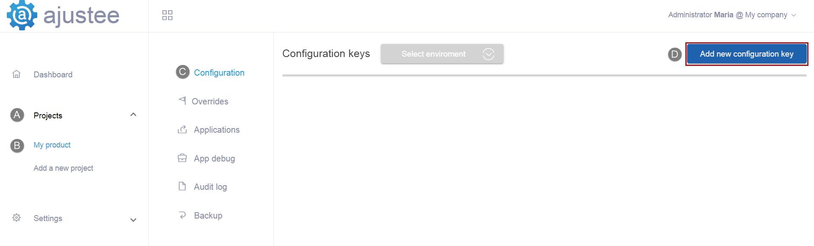
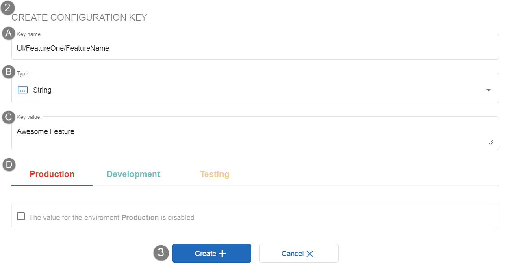
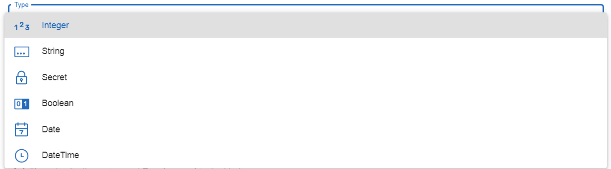
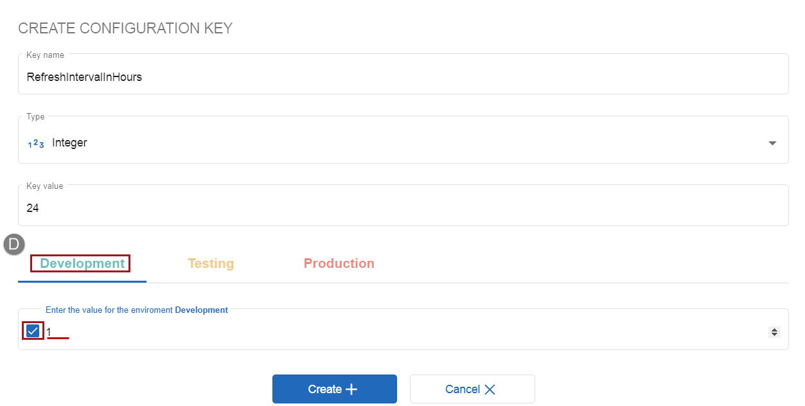
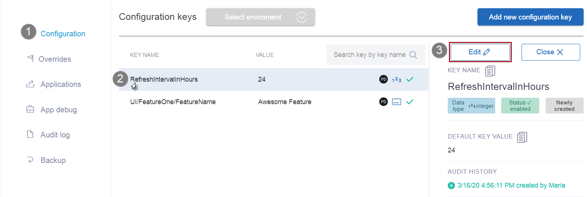
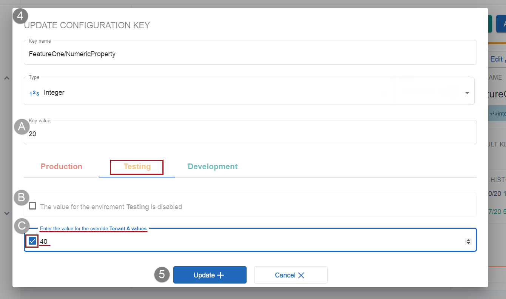
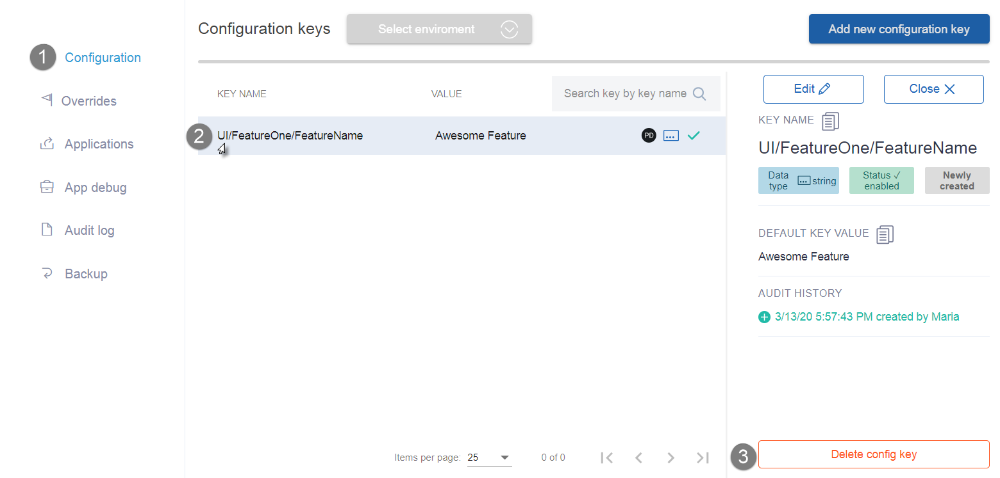

How to create
update and delete
configuration keys
Find out what is a configuration key. Get guidance in basic actions with keys, such as creating, editing, sorting, deleting. The article explains the idea of configuration keys, as well as the concept of namespaces and shows how handy this format is. Check out what data types are the most effective for the different key values. Learn how to set default, environment and override values in Ajustee system.
IN THIS ARTICLE
- Configuration key
- How to create a configuration key
- Updating default, environment, override key values
- Searching and sorting keys
- Deleting configuration key
Rights: Admin, PowerUser can create, edit, and delete keys. All roles can sort and search keys.
Configuration key
In Ajustee system onfiguration keys are the specific settings of your product. It can be anything. For example, some of them make user interface elements of a product configurable, like colors or font sizes. Others manage functions or business logic. A feature flag that enables or disables functionality during runtime is a configuration as well. Each configuration key has a unique name, certain datatype, default key value, and can have specified environment and override values. The number of configuration keys within the project is unlimited.
How to create a configuration key
-
1. Open configuration keys tab and click the "Add new configuration key" button
- Select Projects in the left navigation menu. Choose your product from the expanded list. Its sub-menu gets displayed with the Configuration tab open. The grid might be empty at the beginning. Click the "Add new configuration key" button in the top right corner.

-
2. Fill in the "Create configuration key" form
-

- A. Name a configuration key
- Fill in the Key name field. The key name must be unique within a project. You can use:
- Aa-Zz letters,
- 0-9 numbers,
- _-.~/ symbols,
- no spaces.
The recommended format is Namespace/KeyName. Use the forward-slash “/” as a separator to nest the key into a lager layer of namespace and create a key path.
Namespaces are useful to organize configuration settings. For example, they can belong to a product layer (UI, Business, Data) or a feature (FeatureOne, FeatureTwo, NewFeature).
It is possible to give several namespaces to one key, as they can be nested into each other. For instance, UI/FeatureOne/FeatureName. Ajustee automatically extracts "UI" and "FeatureOne" as namespaces two levels deep and "FeatureName" as the key name.
This format allows using "Namespace whitelist" feature which limits applications access to the subgroups of keys. Also, it helps to search by a namespace the keys that belong to one category.Note: Key name won't be editable after the key is created.
- B. Set the datatype for the key
- Choose one of the following data types from the drop-down list in the Type field:

- Integer - is preferable for numeric values rather than a string. Int type holds only whole numbers that can either be positive or negative and zero.
- String - an array of any UTF8 symbols. Often used for alphanumeric values and text. For example, applying string datatype you can set a color by color code, create a title, provide any sort of messages, apply non-integer numeric values and much more. This datatype is universal and useful if the value does not fit integer, boolean, date and time types. But string values require parsing on the client's side and therefore extra time for processing, unlike the rest of types.
- Secret - is basically a string type which is not available for view via user interface, unless in case of key editing. Hiding values work well for sensitive information, like access or API keys.
- Boolean - true or false value. For instance, it might be used for a feature flag setting to turn it on and off.
- Date - is handy for settings that refer to data stored in a date format. For example, it can be applied for a condition with a date of user registration, or configuration of a deadline for a certain form. Set the key value as MM/DD/YYYY. Click the calendar icon in a “Key value” box to get a visual calendar pop-up.
- DateTime - convenient to specify the time in addition to date. A valid format for the key value of this datatype is MM/DD/YYYY, 12:00:00 AM.
Note: The key data type won't be editable after the key is created.
- C. Set the default value for the configuration key
- Default value is automatically applied by the system to each configuration request for every env except for the ones that are assigned with environment and/or override values. Thus, default is required but, has the least priority.
Enter it in the "Key value" box. Value format is defined by key datatype.
- D. Set the environment value the configuration key
- Environment value is applied by the system to each configuration request for a particular env instead of the default value except for the ones that are assigned with override values. Use it to meet the special needs of a certain env and adjust the configuration to business and development cycles. For example, the default value for RefreshInterval key is 24 hours, and it fits users’ needs, but it is too long for the Development team. That is why we assign 1 hour interval as Development environment value.
Environment value is optional and can be set or deleted later.
To set it click the Environment Name, put a flag, and next to it enter the value for the env.
-
3. Click the “Create+" button down the form
The new key has been created and now you can see it in the configuration keys grid. Configuration key creation record is made in the Project Audit log. It also may be viewed in Audit history on Key details panel.
Updating default, environment, override key values
- Get to the Configuration keys tab of the project.
- In the grid, click the key you are about to update to open its details panel on the right.
- Click the Edit button on the top of the panel.

- Edit values in the "Update configuration key" form.
The key name and datatypes are not editable. The following key values can be edited only according to the set datatype format. Details of the datatype formats are described in the guide “How to create a configuration key” above, step 2B "Set the datatype for the key”.
A. To edit a default value make changes in Key value field. This value can be updated, but never deleted.
B. To create or edit an environment value click the env name, put a flag to enable the field, enter the value next to a flag. To delete it remove the flag.
C. Before setting an override value it is necessary to create the override for a particular environment in the Override tab of the project. Follow the guide “How to create an override” for details. Once it is created, the flag for assigning override value becomes available in this form. Click on the env name, put a flag, enter the value next to a flag. To delete it remove the flag. Override value has the highest priority. - Click the "Update+" button down the form.
Configuration key update record is made in the Project Audit log. All values assigned to the key can be viewed on Key details panel.
Searching and sorting keys
Searching by key name or namespace helps navigate the grid with numerous keys. The Search field is in the top right corner above the grid.
- PD - stands for project default. It means this key has a project Default key value in this environment.
- ED - stands for environment default. This key has a specified Environment value for this instance. To see the difference between default and environment values open the details panel by clicking the key in the grid.

Deleting configuration key
- Open the Configuration keys tab of the Project.
- In the grid, click the one you are about to delete.
- The Key details panel is displayed on the right. Click the "Delete config key" button in the downright corner.

- The final confirmation is required on the pop-up.
After the confirmation, the key is deleted. It is not displayed in the grid anymore. Meanwhile, key audit history is not deleted and is available in the Audit log tab of the Project menu.
Bulk configuration keys deletion is not available